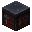
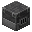
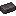

Guia até o Topo
Do cobre à netherite em um só lugar. Veja quantos minérios cada armadura e cada ferramenta pedem, onde achar cada um e, lá embaixo, monte o seu próprio kit na calculadora.
Sua jornada de picaretas
- Madeira Todo mundo começa socando árvore
- Pedra Já minera cobre e ferro
- Cobre Um upgrade da pedra
- Ferro Libera ouro e diamante
- Ouro Desvio brilhante
- Diamante Libera os detritos
- Netherite O topo do jogo!
Arraste para o lado para ver a jornada toda →
Quanto minério eu preciso?
Primeiro, a regra que vale para quase tudo: a receita de cada peça é sempre a mesma, só muda o material. Passe o mouse nos itens para ver os detalhes.
Calculadora: monte o seu kit
Clique nas peças que você quer fazer (clique de novo para tirar). A calculadora soma só o que você escolheu e mostra o total de minérios, gravetos e até o carvão da fornalha.

Bônus: como montar cada peçaEscolha o material e veja onde colocar cada item na grade 3×3 da bancada. A netherite é feita na mesa de ferraria.
Dicas de minerador
Pequenos truques que poupam tempo, diamantes e algumas vidas.
-
Não cave para baixo!
Cavar reto para baixo é o jeito mais rápido de cair numa caverna ou direto na lava. Cave em escada.
-
Leve um balde d'água
Apaga fogo, transforma lava em obsidiana e salva você de quedas. É o item mais subestimado da mineração.
-
Tochas sempre à direita
Na ida, coloque as tochas na parede da direita. Para voltar, é só seguir com elas do lado esquerdo.
-
Fortuna III nos diamantes
Rende em média 2,2 diamantes por minério. Mas não adianta nos detritos ancestrais: eles sempre dão 1.
-

Alto-forno = 2x mais rápido
Para minérios e itens de metal, o alto-forno funde no dobro da velocidade da fornalha comum.
-

Netherite boia na lava
Itens de netherite não queimam. Caiu na lava? Seu equipamento sobrevive. Você... talvez não.